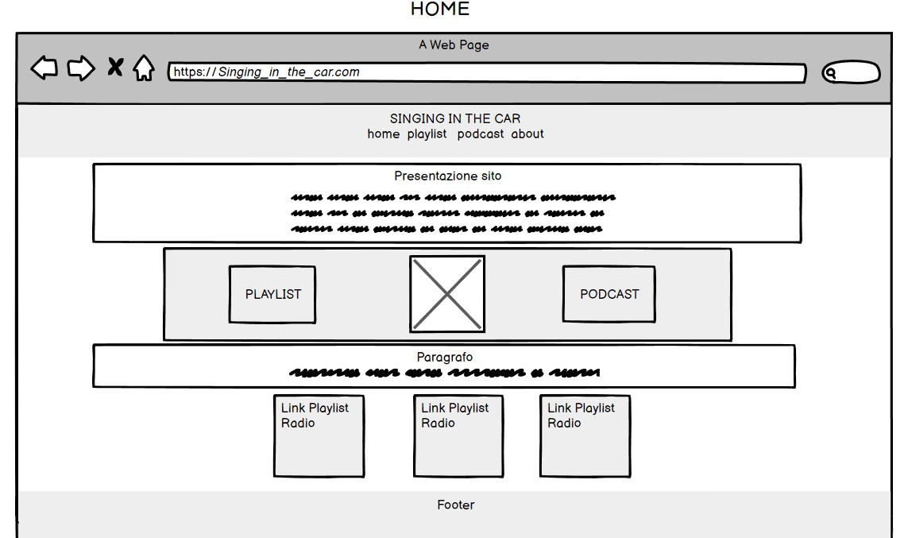
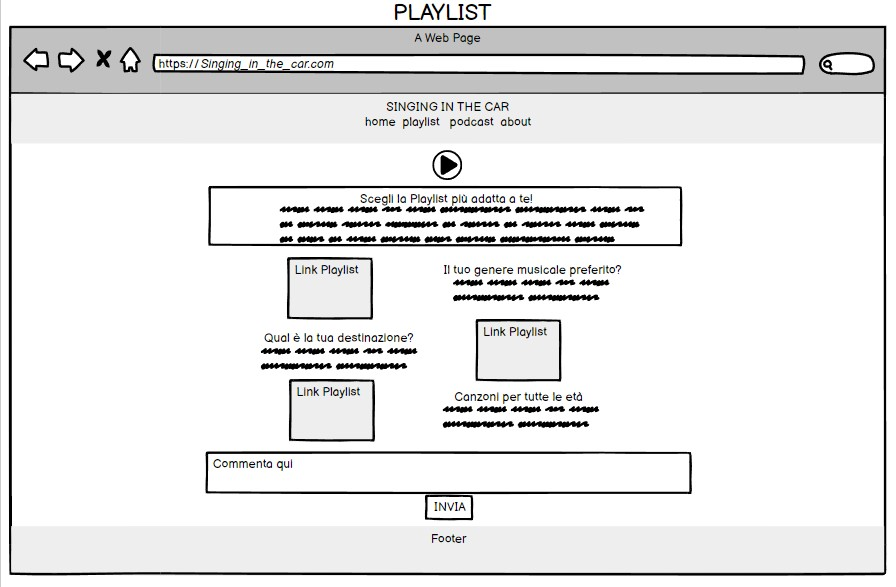
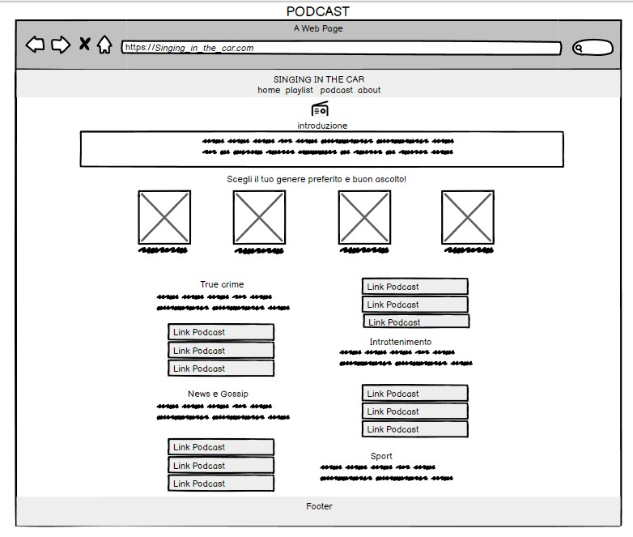
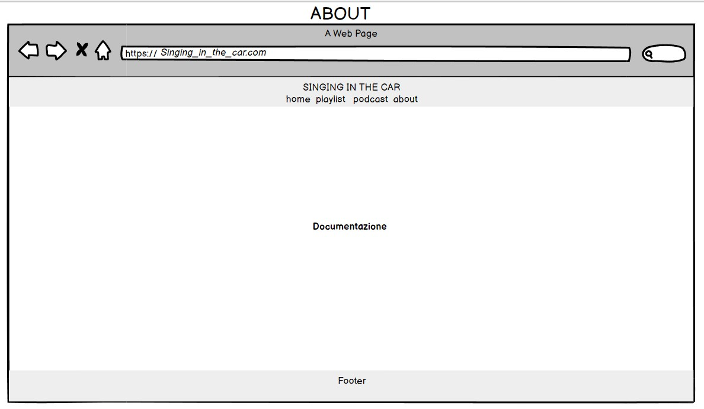

STRUTTURA E LAYOUT
ARCHITETTURA: la struttura è molto semplice, per facilitare l'uso del sito ho deciso di adoperare una struttura ad albero: dalla home si possono raggiungere le altre tre pagine.

ABSTRACT
Questo progetto nasce per facilitare la ricerca delle canzoni da ascoltare mentre si è in macchina, come alternativa alla classica radio. Ho notato che negli ultimi anni, le persone prediligono collegare il cellulare alla radio e poter scegliere cosa sentire, grazie a piattaforme come Youtube o Spotify, invece di sprecare tempo a scorrere fra un canale radio e l’altro, non trovando niente di loro gradimento. In questo sito si propongono diverse suddivisioni per categoria, per velocizzare la ricerca e può aiutare coloro che non amano essere interrotti dalla pubblicità fra una canzone e l’altra.
PROJECT MANAGMENT PLAN
OBIETTIVI E TEMI: il tema principale del sito è la musica e l’obiettivo è di proporre playlist da poter ascoltare in macchina per intrattenere chi guida e i suoi passeggeri.
TARGET UTENTE: il sito è rivolto a tutti coloro che devono percorre un tragitto in auto.
COMPETITORS: Spotify e Youtube sono i siti più conosciuti e ho notato personalmente anche i più usati per mettere canzoni in auto; Spotify utilizzato maggiormente dai ragazzi, mentre Youtube dagli adulti. Entrambe queste piattaforme offrono una loro suddivisione per categorie: Spotify ha creato proprio una cartella con al suo interno diverse playlist chiamata ''In auto'', mentre su Youtube non esiste una categoria apposita. Nella cartella offerta da Spotify sono presenti anche i podcast, ma al suo interno non è presente un’ulteriore differenziazione per genere, destinazione o età, tutte le playlist e i podcast sono presentati uno di seguito all’altro, in modo confusionario e questo non facilita la ricerca. Youtube non offrendo una propria proposta, lascia che l’utente cerchi autonomamente ciò che vuole, fra una quantità troppo ampia di contenuti e anche in questo caso, abbastanza confusionaria. Sia su Spotify che su Youtube fra un brano e l’altro si è interrotti dalla pubblicità, a meno che non ci si abboni, in quest’ultimo caso si potranno scaricare canzoni e ascoltarle offline senza interruzioni. Per il servizio offerto sono sicuramente ottimi perché offrono un’ampia gamma di contenuti, diversamente per l’usabilità, in quanto rimangono molto dispersivi, Youtube più di Spotify.
STRUTTURA E LAYOUT
ARCHITETTURA: la struttura è molto semplice, per facilitare l'uso del sito ho deciso di adoperare una struttura ad albero: dalla home si possono raggiungere le altre tre pagine.
WIREFRAME:
   
LOOK AND FEEL: La grafica del sito si mostra abbastanza semplice, proprio per dare già dall’apparenza un’idea di facile usabilità. I font scelti sono: un sans serif per i titoli e il menù per metterli in risalto e un serif per i paragrafi per migliorare la leggibilità; per lo stesso motivo sono rimasta in un range di grandezza dei caratteri da 1em a 3em. I colori utilizzati principalmente sono: l’arancione perché crei una sensazione di accoglienza e calore nell’utente, l’azzurro utilizzato per dare un messaggio di affidabilità e il verde per trasmettere calma e rilassamento; tutti calori che ritroviamo nell’immagine di sfondo del menù e del footer, proprio per dare l’idea di potersi mettere in macchina e rilassarsi godendosi il viaggio. Oltre gli elementi testuali e le immagini, nel sito ho integrato piccole icone, caroselli di playlist e card.
LINGUAGGI E STRUMENTI
I linguaggi utilizzati sono HTML e CSS. Gli strumenti adoperati sono: Bootstrap per gli elementi di grafica e le icone, Google Fonts per i caratteri, Google e Pinterest per le immagini, Spotify per le playlist e i podcast, GitHub per la pubblicazione, Google Analytics per il monitoraggio dei risultati del sito, Balsamiq e Power Point per la struttura dell’architettura e il wireframe.
BACKGROUND
Ho scelto di creare un sito specifico su questo tema, perché a me come tante altre persone diverte cantare in macchina con i miei amici e se ci soffermassimo a pensare alla quantità di tempo, che passiamo in macchina o su altri mezzi di trasporto, penso che questo sito possa tornare utile. Piattaforme come Spotify e Youtube sicuramente offrono una gamma più ampia a livello di contenuti, quindi ho deciso di focalizzarmi sulla facilità d’uso e chiarezza del sito. Dividendo le playlist in: generi musicali, destinazioni e per età e i podcast in: true crime, intrattenimento, news e sport, questo sito permette di soddisfare i gusti degli utenti in modo semplice e veloce.
OBIETTIVI COMUNICATIVI
Il mio sito ha l’intento di alleggerire il tragitto in auto quando si sta andando verso la propria destinazione, di far divertire quando si è insieme e far compagnia se si è da soli. Gli obiettivi da raggiungere sono: 100 visite, 10 follows e 50 like al post di presentazione
TARGET AUDIENCE E MESSAGGIO
Il target primario del sito sono tutti coloro che possiedono una macchina e la utilizzano per spostarsi, ovviamente in questo caso andiamo in un range di età dai 18 anni in su. Il target secondario è composto da persone di tutte le età perché interessa i passeggeri, dai bambini ai più grandi. Per promuovere il mio sito in questo caso, i mezzi più funzionali, saranno sicuramente i social network come WhatsApp per i più grandi e Instagram per i più giovani.
Il messaggio che voglio trasmettere con questo sito è l’importanza del tragitto, non solo della meta. Il percorso può condizionare anche il nostro umore per quando arriveremo alla meta desiderata per questo non va sottovalutato.
PROMOZIONE
La promozione del sito avverrà attraverso Whatsapp, condividendo il link nei vari gruppi; Instagram attraverso le stories e il classico passaparola.
VALUTAZIONE DEI RISULTATI
Ho adoperato Google Analytics per monitorare le visualizzazioni ottenute dalla promozione del sito e la sezione Insights di Instagram per controllare l’andamento della pagina. I risultati ottenuti sono stati positivi rispetto agli obiettivi prefissati.